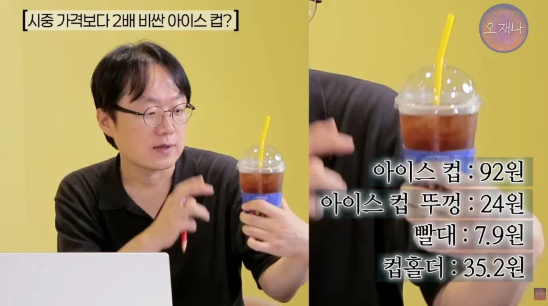

2천원짜리 아아 한세트에 160원, 시중가 2배

2천원짜리 아아 한세트에 160원, 시중가 2배
그게 프차니까
보통 프차는 더 싸게 공급해주지않나?
그래도 프차가 낫다 개인카페는 걍 인테리어도 어둑어둑하고 기계도 싸구려쓰고 위생도엉망임
개인카페가 왜 망하고 프차 카페가 왜 계속 생기는데 이유가있음
꼬우면 개인카페차리면됨
개인카페 검색해봤는데 원두 고를 수 있다?그럼 한 20개중 19개는 커피 맛있음. 그래도 대기업이랑 상대해서 어케 이김?? 보통 맛있고, 분위기 좋아도 오래 버티기 힘듬.
그걸꺼면 차리지 말라고? 내가 차린데에는 아무도 없는 무주공산이였는데 물론 상권도 없다시피
내가 차렸어, 5년을 공들여서 궤도에 올렸다? 주변 프차 카페가 500m안에 10개생김. 건물주한테 돈 더줄테니까 빼라고 연락옴. 프차 직영점 3개 나머지 가맹점. 맨날 행사함. 돈 쏟아 붓는데 이거 못이김 쥡지 않음
틀린 말은 아닌데
개인 카페 리스크랑
프차 리스크 중 프차 리스크를 선택한 것 뿐이잖아
프차 계약하고 개인적으로 소모품 사다 쓰먼 퀄리티가 바뀌니까 경고 받는게 당연한거고
그래서 카페를 1개만 차리면 망함
그 상권을 다른 곳에서 눈치채우고 들어오기전에 니가 다 먹어야하는거임
규모의 경제임. 프차 단가를 따라 잡을 수가 없음. 그래서 결국 요즘 살아남는 개인 카페는 디저트 싸움으로 승부하는거고. 언제나 최선을 선택할 순 없고 그래서 어쩔 수 없이 차선을 선택한 사람들인데 꼬우면 어쩌고 하는건 좀.. 마치 중소 다니는 사람한테 꼬우면 대기업 다니지 하는거나 마찬가지임. 그냥 아무 이해도 없이 비난하는
어쩔수없는사람들도있다는거 알겠음
근대 그건 시장에뛰어드는 좋은자세는아님
시장은 냉정하잖아
꼬우면이 과해보일수있긴한데 개인카페갔다가 실망을 많이한 내 개인적인 감정이 들어간 단어임
개인 카페 어딜 다닌건지 뭔 이상한 소리를 하고 앉았네 ㅋㅋㅋ
싸구려 기계 쓰고 위생 엉망인, 망할 개인 카페를 찾아다닌게 아니고?
커피에 돈 쓰는거 싫으면 네 말대로 저가프차커피만 찾아다니면 됨
수천 들고 싸게 창업해서 저가 커피랑 싸우려는 네 말대로 좋은 자세가 아닌 업주들은 당연히 저가커피보다도 싼 기계에 위생도 신경 못 쓰는 그저 그런 1인 카페 하다가 망하는거지
개인경험인데 뭐 어쩌겠니
카페를 좋아서 찾아다니는사람은아닌데
개인카페들은 대부분 구리고
금방 망하거나 주인이 바뀌던데
개인카페 안가는이유가있고 개인카페 들이 망하는 이유가 있는거지
자영업자로써의 기본적인 소양조차 없는경우가많음
안 가는 이유는 그냥 니가 커피에 돈 쓰는게 아까워서 싸구려만 찾아다니니까지 뭔 이유가 따로 있겠냐
ㄴㄴ 그냥 주변에보이는 개인카페를 가면 그런결과가 나온거지 딱히 찾아다니는건아님
그러다보면 개인카페=구림 이라는선입견이 생기는거고 싸구려먹을거면 개인카페가 더 싸던데ㅋ
쳐닫아 좀 병신아
비응신 감정표출밖에못하는새끼
너가 감정표출받게 못 받는 받이련이야 이 개병신아 ㅋㅋ 너한테 뭐하러 논리적 설득을함? 어차피 감정 쓰레기통인데
병신새끼 지가 논리적으로말하는지 감정적으로 말하는지 분간도못하는새끼네
[너한테 뭐하러 논리적 설득을함? ]
이부분이 지금 니가 논리를쓴거다. 개 병신새끼야
논리적으로 말할수없는게아니고 논리적으로 가치가 없다고 프레임을 짠게 논리야 이 븅쉰새끼야
[개병신아 ㅋㅋ ] <-- 여기서 [ㅋㅋ] 는 재미보다 굴욕감을 최대한 감추고 니가 우위에있다는걸 나한테 과시하는장치같은데 나한테 후달리는 근거로는 잘쓰고있음
이새끼 감정표출밖에 못하는새끼가아니고 감정표출이 뭔지 논리가 뭔지 분간을 못하는새끼였네
병신~ㅋ
구린데 몇곳 가놓고 개인카페는 구리다고하는건 너같은애들 몇명보고 인간은 돌고래보다 지능이 낮다고 하는거랑 같음
뭐 표본이 부족은 인정하겠음. 근대 넌 내가 몇곳이나 다녀봤는지 모르면서 니맘대로 [몇 곳] 이라고 반박하는척하는것 자체가 근거없는 추측임
뭐 너같은애들 보면 수준이 뻔하긴하지~ 일반화 비교를 인신공격으로 돌리는것만봐도~
나도 혹시 [개인 카페하세요?] [가족친인척중 개인 카페 하시는분이 계신가봐요?] 이런식으로 인신공격할수는있지만 안할게~
솔직히 메카커피는 어딜가도 평타는 침 개인카페는 안가본곳은 좀 선뜻 가기가 힘듬
프차는 커피가 구리지 않나? 알바가 대충대충 뽑는데.. 개인카페는 편차가 심하지만 고점이 높잖아
치킨업체,제빵업체들이 자기 자식이 운영하는 회사랑 웃돈주고 원재료 거래하다 공정위한테 얻어맞은것도 다 이해해주시겠죠?
저가형 프차들이 저래서 본사 배만 불려주는 구조잔슴
그분이 값싼프차들로만 장사하는이유가있지 ㅋㅋ
전국에 규모만 늘리면 무조건 돈버는구조
쓰레기같은놈들
저래도 개인까페는 프차단가 못따라잡음
애초에 개인카페는 단가로 승부하려고 하면 안되고 품질로 승부해야되는데 원두관리, 샷내리는 법도 제대로 모르고 그냥 국비로 교육하는 실버 일자리 바리스타 과정 몇시간 듣고 카페 차려서 장사하는 인간들 태반이더라
아 그런데 가서 커피 한잔 먹으면 진짜 프랜차이즈 커피 바로 먹고 싶어짐
뭔 이상한 수료증 붙여놓고 인테리어 밤티고 후....
개인카페 커피맛은 사장이 고객들 응대하는 모습이랑 가게 인테리어만 봐도 어느정도 유추 가능. 꼭 깔끔하고 세련되지 않더라도 좀 가게에 신경을 많이 쓴거같은, 사장님 취향의 손때 뭍은 인테리어 소품 아기자기하게 배치 잘 해놓은 가게면 대부분 커피맛도 좋을 확률이 높고, 메뉴 주문할때도 손님을 유심히 관찰하면서 메뉴 또는 원두 설명을 친절하게 해주면 열에 아홉은 맛있는 가게임
나도 매번 원두시켜서 얼려뒀다가 핸드드립내려먹긴하는데 밖에서 괜찬은 원두골라먹긴 너무 비싸더라 공간이 필요할땐 스벅가고 테이크아웃은 메가커피 개인카페는 맛집찾게되니까 자주가기 쉽지않음
이게 결국 동네장사로 동네사람들이 편하게 와서 맛있는 커피를 자주자주 먹어줘야 개인 카페가 유지가 되는데 아직 우리나라에선 커피하면 그냥 직장인들 잠깨는 포션이나 밥먹고 입가심으로 한잔 마시는 정도지 생각만큼 커피 맛을 깊게 따지는 사람이 별로 없음 ㅋㅋㅋ 그래서 이래저래 고품질의 개인카페 하기 힘든 나라임
니말이 맞다
카페하는 개붕이임. 우리 매장 기준으로 1000개짜리 16온스 기준 컵 73원 뚜껑 19원 홀더 14원 정도임.
생각보다 싸네
내가아는선에서는 약간 더 비싸지만 프차니까 납득 가능한수준인데 어떻게 2배라는건지 구체적으로 알려주지
저렇게 팔아먹고 가맹비도 받는거잖아
프차니까 가는거지
저걸로 손흥민 뷔 광고도 하고 관리도 하고 하는거 아님?
???: 프차를 안하면 되잖아?
프린트비 광고비 하면 합리적으로보이는건 왜냐
나 옛날에 프차카페 알바했는데 사장이 비싸다고 시장에서 싸게 컵 사왔는데 싼건 싼 이유가있음 존나얇음
뚜껑이고 컵이고 펄럭펄럭함.
꼬우면 개인카페하면 되지
그런데 우리나라 개인카페중에 호주 카페들마냥 퀄리티 넘사벽인곳이 0.1%는 되냐? 죄다 수준이하 아닌가
최근 원두값이 십창렬되서 개인카페해선 힘듬
10년 넘게 개인카페하시는 부모님 비결 = 본인 건물에서 하심
응 난 믹스~